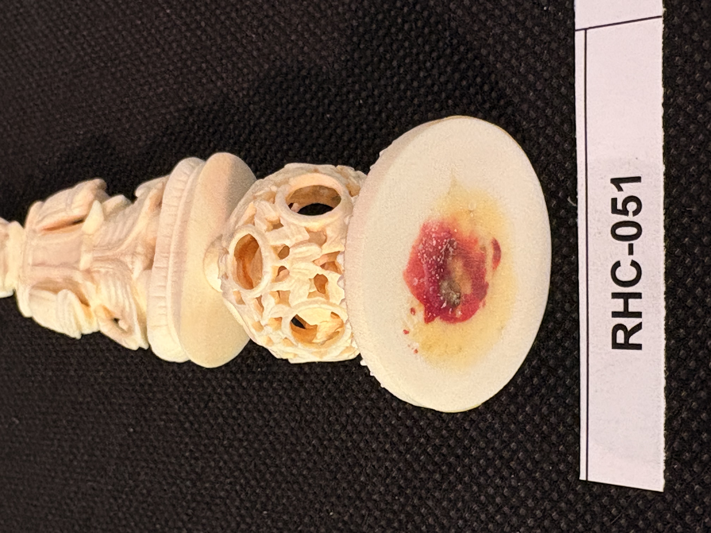
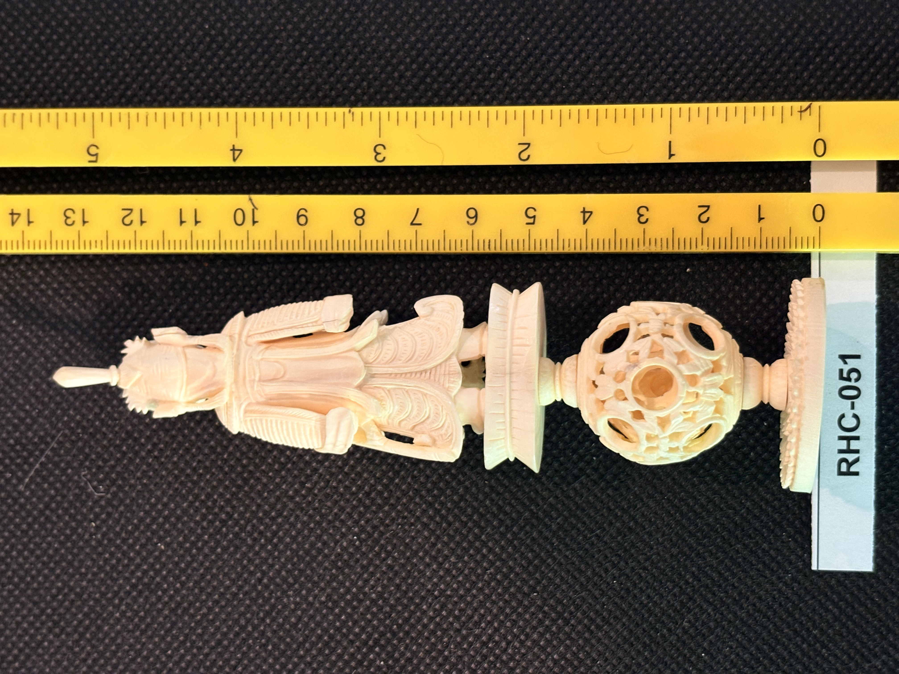
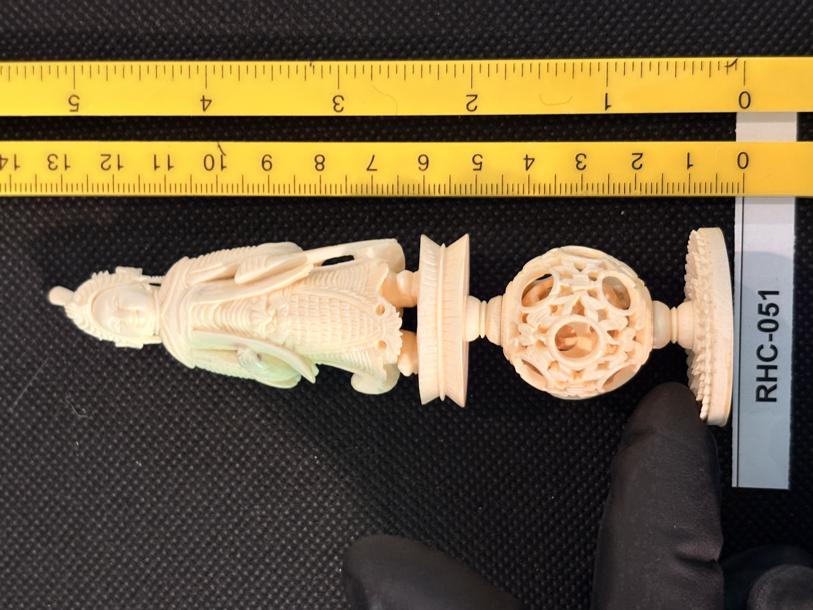

RHC-051 reviewed
Carved Ivory Figural Finial/Handle: Crowned Deity Figure over Openwork Puzzle-Ball and Fluted Discs



- Object Type
- An elaborate carved ivory finial or handle composed of a crowned, robed deity-like figure at one end, a fluted collar disc, a pierced/openwork 'puzzle ball' sphere, and a second fluted disc, terminating in a flat smooth disc foot with a reddish stain or residue mark; likely a ceremonial or decorative handle (e.g., for a fly-whisk/chowrie, parasol, or ceremonial staff) rather than a tool, though its exact original function is not confirmed.
- Material
- Presumed ivory (cream-white, fine detailed figural and openwork carving).
- Dimensions (cm)
- length: 14.0cm — Overall length ~14.0cm estimated off the cm scale shown in photos c and d.
- Subject Matter
- A crowned, richly robed deity or royal figure (South/Southeast Asian, likely Indian iconography) at the finial end, holding what appears to be a small scepter or attribute in one hand, above a fluted collar disc, a pierced/openwork spherical 'puzzle ball' bead (matching the technique seen in RHC-042 and RHC-047), a second fluted disc, and a plain flat disc foot bearing a reddish stain/residue mark similar in character to RHC-043's base marking.
- Artist Attribution
- unknown
- Date / Period
- undated (stylistic estimate: South/Southeast Asian, likely Indian, carved ivory ceremonial or decorative handle)
- Mount / Display Stand
- None separate — the flat disc foot itself may have been affixed to a larger object (e.g., a fly-whisk, parasol, or staff shaft) given the reddish stain/residue, similar in character to RHC-043's base marking, but no matching mount is present.
- Color / Technique
- Fully carved figural finial with fine facial/costume detail, combined with pierced/openwork puzzle-ball carving and turned fluted discs; natural material coloring only, with a reddish stain/residue on the flat foot; no ink work or paint.
- Condition Notes
- Piece appears intact overall; the flat foot shows a reddish stain/residue mark (possible old adhesive or dye transfer) but no structural damage. Not physically examined.
- Distinguishing Features
- Combines three carving techniques seen separately elsewhere in the collection — figural deity carving, openwork 'puzzle ball' technique (RHC-042, RHC-047), and turned fluted forms — into a single elaborate composite finial/handle, the most technically complex single object in the collection to date.
- Legal / Regulatory Status
- Material not confirmed. If genuine ivory, species and import history would need confirmation before any loan/sale (CITES/ESA considerations for South Asian ivory). Flag for legal review; not a legal determination.
- Rights / Copyright
- No attribution identified; copyright status undetermined.
- Keywords
- figural finial deity figure puzzle ball openwork fluted disc handle Asian export not flat-engraved
- Status
- reviewed
- Date Cataloged
- 2026-07-15
Open Research Questions
Deferred to phase 3: identify the specific deity/figure depicted to help place origin and date; determine original function (fly-whisk handle, parasol handle, ceremonial staff finial, or other) and examine the flat foot's staining under magnification.